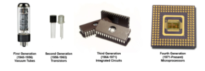

The first generation (1940-1956) used vacuum tubes for circuitry and magnetic drums for memory, and were often enormous, taking up entire rooms.

The second generation (1956-1963) used transistors instead of vacuum tubes, allowing computers to become smaller, faster, cheaper, more energy-efficient and reliable.